촉매 반응기와 물질 전달
대부분의 실용 반응기는 촉매를 사용한다. 이는 선택도와 반응속도를 높일 수 있기 때문이다.
7.1:촉매반응
촉매는 평형조성을 바꿀 수는 없으나 속도를 증가시킬 수 있다.
7.1.1:물질전달
촉매를 쓸 경우 반응물과 생성물이 촉매로 전달되는 단계가 존재하며 따라서 촉매 반응 속도는 물질 전달 속도에 의해 가려질 수 있다. 이때문에 반응속도에 대한 지식이 그다지 중요하지 않다고 보는 공학자들도 있다. 반응에서 물질 전달의 역할은 반응과 반응계를 설명하는 데 필수적이기에 이 장에서 다룰 것이다. 촉매 자체는 다상 반응기이기 때문에 물질 전달이 매우 중요하다.
7.2 촉매 반응기
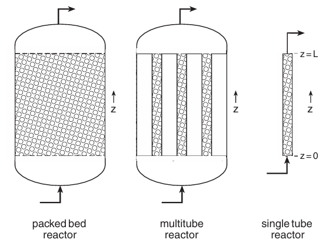 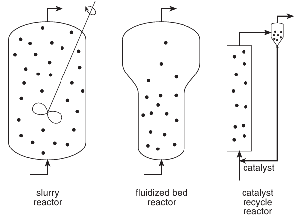
촉매 충전층 반응기인 PBR, 슬러리 반응기, 라이즈 반응기가 있다.
PBR, 상승관 반응기: PFTR하고 거의 비슷하다. 여기서 u는 촉매 입자 주위를 흐르는 유체의 평균 유속이다.
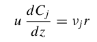
부피간의 관계를 보면
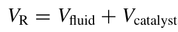 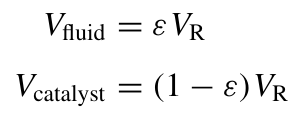
공극률이라고 불리는, 촉매 사이 공간 팩터가 VR에 곱해지면 유체 부피가 나온다.
슬러리 반응기: 이건 혼합이 들어가기 때문에 CSTR하고 비슷하다.
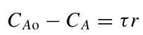 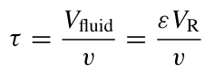
여기서 중요한 것은, 물질수지식에서 r을 정확히 어떤 형태로 사용하는 지 이다. 뭔가 차이가 있을 것만 같다.
7.3:표면반응과 효소 반응의 속도
촉매반응기의 경우 반응이 오직 촉매에서만 일어나므로 표면 반응 속도 r''을 지정해야 한다. 이는 촉매의 단위 표면적 당 단위 시간당 반응하는 몰수이다. 다만 이는 단위가 안맞으므로 바로 물질수지식에 대입할 수 없고, 다음과 같은 관계식을 가지는 유사균질속도 r을 대입해준다.
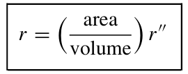
그럼 문제는, r''에 뭘 곱해줘야 r이 되는가? 이다.
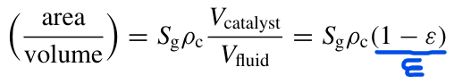
촉매의 단위 무게당 표면적과 촉매 펠릿의 밀도에, 촉매의 비율을 곱해주면 최종적으로 앞의 팩터가 나온다.
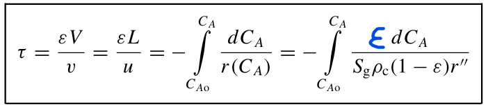
최종적으로는 위와 같이 쓸 수 있다.
근데 r''을 측정하는 것도 쉽지않은 문제가 있다. 그래서 촉매의 단위 무게당 속도 r'을 정의할 수 있으며 이때 r은 다음과 같다.
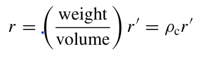 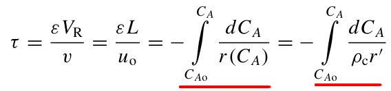
즉 촉매의 밀도만 나눠주면 된다. 원래의 pftr식과는 r'이 들어가고 촉매 밀도로 나눠준 것 외에 아무런 차이가 없다.
7.4: 다공성 촉매
촉매의 표면에서 반응이 일어나므로 표면적이 넓은 게 중요하다. 이렇게 표면적을 넓게 하는 촉매가 있는데 대표적으로 무정형 실리카, y알루미나,제올라이트, 활성탄, 지지된 금속체 등이 있다.
7.5:전달과 반응
촉매반응이 충전층의 촉매 펠릿 안의 표면 위에서 일어날 때, 펠릿 주위와 내부에 농도 기울기가 생긴다. 이때 3차원 이동이 발생하므로 농도는 C(x,y,z)를 알아내고 이를 최종적으로 간략화를 위해 C(z)로 만들어야 한다.
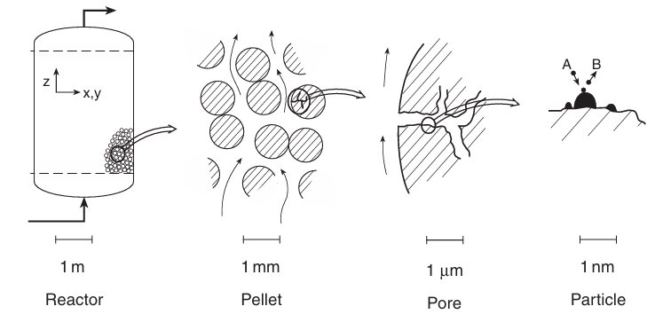
다루는 길이 스케일은 위와 같다.
7.5.2: 반응기 내의 기울기
반응기 전체에 걸친 조성의 기울기를 살펴보자. 이 절의 목표를 살펴보면 촉매 반응의 미시적 설명부터 시작하여 세공 내 확산을 고려하고, 다음으로 펠릿 주위와 내부의 조성을 조사하며 마지막에 반응기 물질 수지식을 z에 따라서 기술하는 것이다. 따라서 이 논리를 반드시 이해해야 한다. 그렇지 않으면 다음 내용이 이해가 안될 것이다.
7.5.3 전달 단계
촉매 표면에서 일어나는 단분자 반응은 다음 식과 같다.
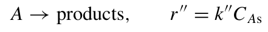
흐르는 유체 중에서 두 위치 1 과 2 사이에 A종의 농도차가 있을 때, 플럭스는 다음과 같다.
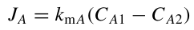
여기서 kmA는 셔우드 수를 이용하여 정의된다.
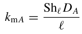
이게 평판인지, 구인지 관인지에 따라 셔우드 정의가 달라지며 그에 따른 kmA가 정해진다.
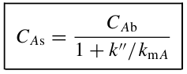
이를 통해 CAS를 알 수 있고, 이를 대입하면 최종식인 r''식은 다음과 같이 된다.
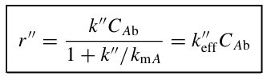
이때 표면반응속도 r''은 만약 k''이 작으면 k''CAb가 되고 kmA가 작으면 kmACAb가 된다. 각각을 반응지배, 물질전달 지배라고 부른다. 한 속도 계수가 크면 농도차이가 작아지게 된다. 각 경우 예상되는 농도 분포는 다음과 같다.
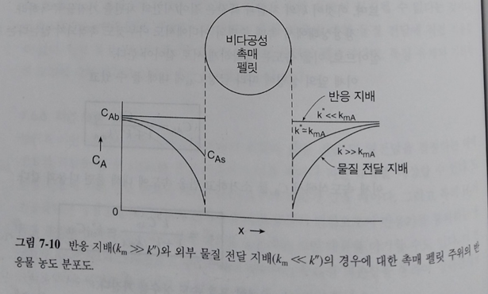
7.8: 세공확산
이제는 세공으로 들어가는 확산이 총괄속도에 미치는 영향을 살펴보자. 이때 r''=k''CAs 보다 세공 내에서 반응이 작을 것으로 추정가능한데, 유효인자를 곱해서 다음처럼 나타낸다.,
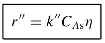
여기서 유효팩터는 틸레 모듈러스라는 무차원 양으로 정의된다.
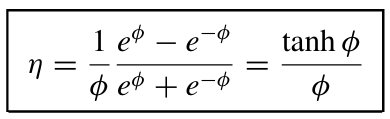 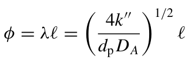
틸레 모듈러스는 촉매의 반응에 대한 정보를 준다.
φ가 작다(φ ≪ 1): “확산이 넉넉한 상태” : 확산이 충분히 빠르고, 반응은 상대적으로 느린 편이다.
φ가 크다(φ ≫ 1): “반응이 너무 빨라서, 확산이 못 따라오는 상태”
φ가 1 근처(φ ≈ 1): 반응 속도와 확산 속도가 비슷한 수준의 경쟁을 한다